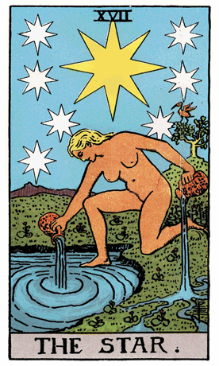

Continuing our journey through the Rider-Waite Tarot Deck, we encounter The Star, a symbol of hope, inspiration, and spiritual guidance. In this card, a naked figure kneels by the edge of a pool, pouring water from two jars into the pool and onto the land. Above, a large star shines brightly, surrounded by seven smaller stars, and lush greenery thrives around the figure.
The nakedness of the figure represents vulnerability and authenticity, signifying a willingness to be open and receptive to spiritual insights. The water being poured symbolizes the flow of spiritual energy and the connection to the unconscious, while the land and pool represent the harmonious blending of the material and spiritual realms.
The large star and the seven smaller stars represent inspiration, guidance, and the seven chakras aligning with spiritual energy centers. The greenery surrounding the figure indicates growth, renewal, and the abundant blessings that come from spiritual connection.
In a tarot reading, The Star often emerges as a symbol of hope and inspiration. It suggests a time for connecting with one's inner guidance, seeking spiritual insight, and allowing the flow of positive energy into one's life. The card signifies a period of healing and renewal, both emotionally and spiritually.
The Star challenges individuals to embrace vulnerability and authenticity in their spiritual journey. It encourages openness to divine guidance and the belief in the abundance of blessings that come from aligning with higher principles.
The seven stars represent the seven chakras, emphasizing the importance of balancing and aligning one's energy centers for holistic well-being. The Star serves as a reminder to trust the process of spiritual growth and to nurture the connection to higher realms.
From a psychological perspective, The Star represents the integration of the conscious and unconscious aspects of the psyche. It signifies the importance of aligning with one's inner wisdom, embracing vulnerability, and allowing the flow of inspiration to guide personal growth.
In a reversed position, The Star may indicate a lack of hope, spiritual disconnection, or a feeling of stagnation. It could suggest a need for introspection, reconnection with spiritual practices, and a commitment to nurturing the inner light. In such cases, the reversed Star serves as a gentle reminder to seek inspiration and renewal from within.
Archetypally, The Star aligns with the archetype of the Muse or Inspirer—a figure that brings creative and spiritual inspiration. The Star symbolizes the connection to higher guidance and the flow of divine energy that inspires growth and renewal.
Societally, The Star encourages communities to foster an environment that nurtures hope, inspiration, and spiritual well-being. It emphasizes the importance of collective growth through aligning with higher principles and embracing vulnerability.
In conclusion, The Star in the Rider-Waite Tarot Deck invites us to embrace hope, seek inspiration, and connect with our inner guidance. It encourages individuals to be open to the flow of positive energy and to trust in the abundance of blessings that come from aligning with higher spiritual principles.